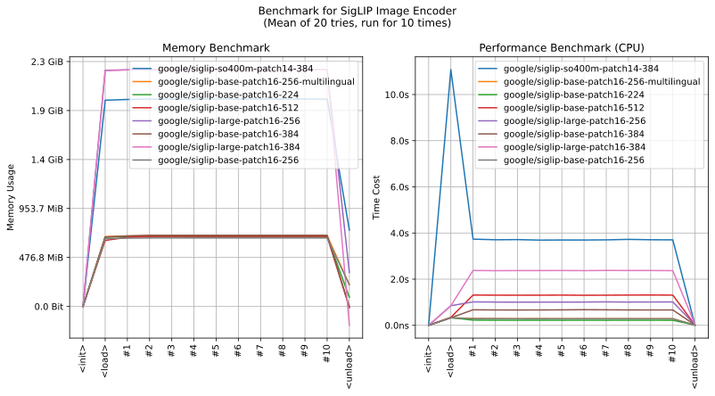
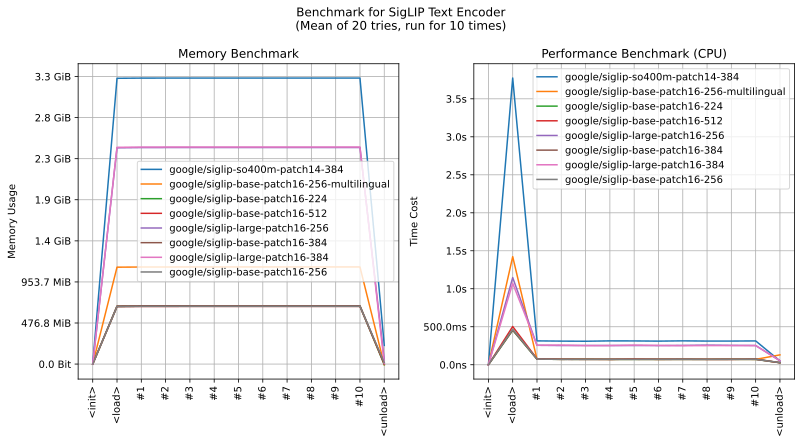

realutils.metrics.siglip
- Overview:
This module provides functionality for image-text matching using the SigLIP (Sigmoid Loss Pre-training of Image-text Pairs) model. It includes functions for encoding images and text into embeddings, and performing classification using these embeddings. The module uses ONNX models downloaded from Hugging Face Hub and provides caching mechanisms for improved performance.
All models and preprocessors are hosted on Huggingface repository deepghs/siglip_onnx

This is an overall benchmark of all the SigLIP models:

get_siglip_text_embedding
- realutils.metrics.siglip.get_siglip_text_embedding(texts: str | List[str], model_name: str = 'google/siglip-base-patch16-256-multilingual', fmt='embeddings')[source]
Generate embeddings for input texts using the SigLIP model.
- Parameters:
texts (Union[str, List[str]]) – Input text or list of texts
model_name (str) – Name of the SigLIP model variant to use
fmt – Output format, either ‘encodings’ or ‘embeddings’
- Returns:
Text embeddings or encodings based on fmt parameter
- Example:
>>> from realutils.metrics.siglip import get_siglip_text_embedding >>> >>> # one text >>> emb = get_siglip_text_embedding('a photo of a cat') >>> emb.shape, emb.dtype ((1, 768), dtype('float32')) >>> >>> # multiple texts >>> emb = get_siglip_text_embedding([ ... 'a photo of a cat', ... 'a photo of 2 cats', ... 'a photo of a dog', ... 'a photo of a woman', ... ]) >>> emb.shape, emb.dtype ((4, 768), dtype('float32'))
get_siglip_image_embedding
- realutils.metrics.siglip.get_siglip_image_embedding(images: str | PathLike | bytes | bytearray | BinaryIO | Image | List[str | PathLike | bytes | bytearray | BinaryIO | Image] | Tuple[str | PathLike | bytes | bytearray | BinaryIO | Image, ...], model_name: str = 'google/siglip-base-patch16-256-multilingual', fmt='embeddings')[source]
Generate embeddings for input images using the SigLIP model.
- Parameters:
images (MultiImagesTyping) – Input images in various supported formats
model_name (str) – Name of the SigLIP model variant to use
fmt – Output format, either ‘encodings’ or ‘embeddings’
- Returns:
Image embeddings or encodings based on fmt parameter
- Example:
>>> from realutils.metrics.siglip import get_siglip_image_embedding >>> >>> # one image >>> emb = get_siglip_image_embedding('xlip/1.jpg') >>> emb.shape, emb.dtype ((1, 768), dtype('float32')) >>> >>> # multiple images >>> emb = get_siglip_image_embedding(['xlip/1.jpg', 'xlip/2.jpg']) >>> emb.shape, emb.dtype ((2, 768), dtype('float32'))
classify_with_siglip
- realutils.metrics.siglip.classify_with_siglip(images: str | PathLike | bytes | bytearray | BinaryIO | Image | List[str | PathLike | bytes | bytearray | BinaryIO | Image] | Tuple[str | PathLike | bytes | bytearray | BinaryIO | Image, ...] | ndarray, texts: List[str] | str | ndarray, model_name: str = 'google/siglip-base-patch16-256-multilingual', fmt='predictions')[source]
Perform image-text classification using the SigLIP model.
- Parameters:
images (Union[MultiImagesTyping, numpy.ndarray]) – Input images or pre-computed image embeddings
texts (Union[List[str], str, numpy.ndarray]) – Input texts or pre-computed text embeddings
model_name (str) – Name of the SigLIP model variant to use
fmt – Output format, one of ‘similarities’, ‘logits’, or ‘predictions’
- Returns:
Classification results in specified format
- Example:
>>> from realutils.metrics.siglip import classify_with_siglip >>> >>> classify_with_siglip( ... images=[ ... 'xlip/1.jpg', ... 'xlip/2.jpg', ... ], ... texts=[ ... 'a photo of a cat', ... 'a photo of 2 cats', ... 'a photo of 2 dogs', ... 'a photo of a woman', ... ], ... ) array([[1.3782851e-03, 2.7010253e-01, 9.7517688e-05, 3.6702781e-09], [3.3248414e-06, 2.2294161e-07, 1.9753381e-09, 2.2561464e-06]], dtype=float32)